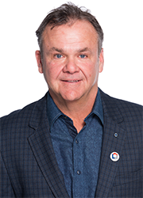
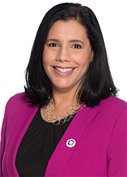
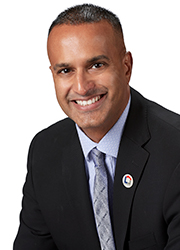

Tom McCormick
Founder & CEO
Tom McCormick is the Founder and CEO of The Nationwide Group of Companies (TNG): www.tngoc.com.
During his tenure as the principal of Canada's largest appraisal company, Tom noticed the centralization of lenders. In order to facilitate appraisal requests nationally; Tom created the concept of an Appraisal Management Company in Canada (AMC).
Since that inception, NAS has continued to be the market leader in innovation, product offerings and process improvements for the mortgage industry. This is evident in NAS's market share of over 60%, number of valuations annually of 450,000 and a mortgage value of over 6 billion dollars.
Tom took NAS to the Caribbean islands, where NAS introduced on-line forms software, mobile app's and a comparable sales data base, all the firsts for the Caribbean.
Tom, looking for further international opportunities has launched NAS in Mexico, where his technology has also provided new and innovative products to help the Mexican market build compliance and regulations around the mortgage industry.
When Tom looked at opportunities in the US, it was evident that the complexity of the market would not allow NAS to be grown organically as in all other countries. Tom found a unique company to acquire called "InHouseUSA" located in California, that offered two products, a traditional AMC and a technology platform that allowed lenders to manage their own panel of appraisers, essentially taking the regulatory risks ".
Today, NAS provides more valuations in more countries than any other valuation platform in the world
Another opportunity Tom saw was in the recovery business within Canada and Nationwide Recovery Services (NRS) was formed. NRS is a robust workflow management system that enables communication between lenders and their legal, real estate, property management, and appraisal professionals, and ensures the most effective use of resources to complete the recovery cycle. NRS brings oversight, insight and intelligence to the process of recovering debts.
Tom also launched Nationwide Home Closing Services (HCS), which is Canada's first online real estate and mortgage closing platform that utilizes transformative technologies to empower the consumer by bringing together professionals into one centralized network to manage the legal and closing process for Purchase, Sale, Refinance, Transfer, and Line of Credit transactions.


Karen Yolevski, LL.B.
President HCS and NRS
Karen initially joined The Nationwide Group to lead Nationwide Home Closing Services, an innovative, technology-driven closing solution for home refinance, purchase and sale transactions. She now also leads Nationwide Recovery Services, Nationwide’s automated end-to-end debt recovery offering for lenders, lawyers and recovery-related service providers.
Karen brings with her over 10 years of combined legal and business experience in the areas of technology, real estate, telecommunications and financial services. Prior to joining The Nationwide Group, she was Vice President, Chief Legal Counsel of Flexiti Financial, a Canadian FinTech responsible for launching Canada’s first virtual private label credit card. Before moving in-house Karen spent seven years in private practice and was a partner at a full-service law firm in Toronto.
Karen received a bachelor’s degree in communications from York University in 2002 and her LL.B. from Osgoode Hall Law School in 2005.

Rodrigo Pinto, CPA, CA
Chief Financial Officer (CFO)
Rodrigo Pinto joined The Nationwide Group as the CFO in October 2015 where he leads the finance and accounting departments. He plays a key role in developing our strategy, and establishing our governance, tax planning and budgeting, as we go through a period of change and rapid growth domestically and in international markets.
Mr. Pinto brings with him over 16 years of finance and accounting knowledge and international experience with several multinational corporations in Brazil, United States and Canada including PricewaterhouseCoopers, Fannie Mae and TD Bank. His most recent tenure was in the capacity of CFO and VP Finance at MBAC Fertilizer Corp.
He is a Chartered Accountant, a Certified Public Accountant in the United States, and holds the equivalent of a CPA designation in Brazil.

Tammy Soliman
Chief Technology Officer (CTO)
Tammy joined TNG in January 2009 and successfully transitioned all technical development and support capabilities from an external IT solution group to be permanently managed in-house. He was instrumental in building the organization's IT Development Team.
Tammy brings with him over 15 years of professional experience in IT and has extensive background on building enterprise applications and data analytics and warehousing solutions for various industries such as financial services, shipping, logistics, publishing, appraisal management, telecommunications, automobile, and insurance. With his background in agile methodology, he has spearheaded and supervised various end-to-end technical development efforts from product inception through design and implementation.
He currently holds professional certifications such as Oracle Certified Associate Java SE, Oracle PL/SQL Developer, Oracle Certified Professional Java SE and Java EE Web Component Developer, Certified Scrum Product Owner, Certified Scrum Master, and SAFe Agilist. Currently, Tammy oversees all application development activities for new products as well as technical enhancements for all of TNG applications.


Éric-Vincent Kayigamba
Executive Vice President, International Sales
Eric Kayigamba joined the senior leadership team in the capacity of Sales Executive Vice President. Over the years, he has carried out the strategies to develop our valuation and recovery businesses through the operations of Nationwide Appraisal Services (NAS) and Nationwide Recovery Services (NRS). In his new role, Eric continues his focus to expand our existing business and lead our new initiatives in Canada and globally.
Eric first joined NAS' team in 2007 as an Accounting Lead. His leadership, expertise, passion for excellence as well as his enthusiasm soon led him to the position of Quebec Regional Sales Manager and quickly catapulted him to Vice President, Eastern Canada. As Vice President of Eastern Canada, he was responsible for shaping and carrying out strategies for NAS and its sister company Nationwide Recovery Services (NRS) in Quebec and Atlantic provinces.
Eric received a Bachelor's Degree in Business Management with a specialization in Finance at Université du Québec à Montréal. Upon completion of his studies, he entered the public sector in the Province of Québec where he amassed many years of experience and occupied several positions related to accounting and finance. In his spare time, Eric is very involved in his community as he's currently sitting on the Board of Directors of Partage Action / West island Community.


Marc Sykes
Vice President, Product and Corporate Development
Marc joined TNG in 2017 with a focus on leading the development of our product and solution platforms across the business, and building new data-driven analytical tools.
Over the course of his career, Marc has proven to be an effective leader with a strong track record of growing product lines and business units. He has additional expertise in strategic partnerships and alliances, as well as in leading key change initiatives across organizations.
Prior to joining TNG, Marc led product development and operations teams that worked across real estate industry segments including financial services, real estate brokers/developers, utility providers, and all levels of government. He gained expertise in products such as automated valuation models, house price indices, predictive scores/models, and market intelligence solutions for real estate professionals.
Marc holds a joint MBA from the Kellogg School of Management (Northwestern University) and the Schulich School of Business (York University) as well as numerous product and project management designations.

Matt Angus, LL.B., J.D.
General Counsel
Matt Angus is the General Counsel of the Nationwide Group, joining the leadership team in 2016.
Mr. Angus has over 15 years of legal and business experience both as a member of a leading transaction law firm at Goodmans LLP, and through his in-house experience as the General Counsel of Summit REIT, at that time one of the largest public Real Estate Investment Trusts in Canada. Matt has also provided legal expertise to a multi-national real estate investment management organization as he held both the General Counsel and Chief Compliance Officer positions at ING Real Estate Investment Management, a member of the global ING Group of companies.
In his General Counsel roles, Matt has often been involved more directly in the business affairs of the organizations, designing and implementing operational, compliance and legal risk management processes and procedures, structuring and negotiating key business arrangements including joint venture agreements, and assisting with change management as the organizations have grown.
Senior Management Team

Ainsley Major
Senior Director, Operations
Ainsley is a University of Guelph graduate who started her career with Nationwide Appraisal Services in 2011. Prior to TNG Ainsley worked in leadership development and program planning with Seneca College.
Ainsley has worked in a multitude of functions at TNG before moving to her current role as Senior Director of Operations. Ainsley previously focused her time on new initiatives in the Caribbean, Mexico and the United States; her passion, enthusiasm and execution techniques have allowed her to be successful in the project management of the international expansion of TNG. Ainsley’s experience in different markets has allowed her to now focus on the domestic and international operations of TNG. Her commitment to excellence has allowed her to develop new strategies to improve the client experience and manage an effective operation.
A recent graduate of the project leadership program through Cornell University, Ainsley continuously works towards improving our client experience, product development and effective appraisal management for our present and future clients, across all our markets and for all our business lines.

Ella Chan
Director, Product Development
Ella joined Nationwide Appraisal Services in 2001, and has been instrumental in evolving the company’s product line to build what is now The Nationwide Group (TNG).
Ella worked in a multitude of functions at TNG before moving to her current role as Director of Product Development, where she is responsible for product strategy and execution. Ella works closely with major clients, partners, and internal teams to define product features and requirements.
She remains heavily involved in the overall success of TNG’s current product offerings and spearheads the research and design efforts for new products and any enhancements to existing products across all business lines. Ella leads an agile team of product managers, business analysts and Technical Level 2 support specialists.
Ella holds Project Management Professional (PMP) and Certified Scrum Product Owner (CSPO) professional designations.

Colleen Colman
Director, Human Resources
Colleen joined TNG in 2015 and brings a fresh perspective to Human Resources Management within the organization. Her passion for developing organizations, teams and people allow Colleen to play a key role in supporting TNG's growth.
Colleen brings over 20 years of HR Management experience in the IT, Manufacturing and Environmental industries. Colleen's areas of experience and expertise include: HR project management and implementation, employee and labour relations, compliance and legislation, full cycle recruitment & selection, change management, coaching and organizational development.


Hermina Birtocean
Director, Finance
Hermina joined Nationwide Appraisal Services in 2007, and has brought extensive accounting and financial management experience coupled with her strengths in economics, process management and strategic planning. Today, as the Director of Finance for The Nationwide Group, Hermina ensures that the overall management of the accounting department aligns with long-term corporate objectives as the company continues to grow.
Prior to joining Nationwide Appraisal Services, Hermina held senior accounting and finance roles at private sector firms in Eastern Europe while she continued her studies toward obtaining her Masters of Business Development.
Hermina holds CPA and CGA professional designations.
Sales Team

Robert Ip
Vice President of Sales, TNG
Robert Ip joins the Nationwide Group of Companies as a senior member, reporting to the President of Nationwide Home Closing, and Nationwide Recovery Services. Robert is responsible for strategy, new initiatives & development, and leadership of TNGOC’s strategic partnerships, lender community, and real estate professionals both domestic and international.
Robert has over twenty-five years of financial services and management experience, with over 10 years of indemnity insurance experience in various senior management, and business development roles. Robert is passionate for developing resourceful solutions that assist organizations with their growth and development, while focusing on a seamless customer experience promoting customer loyalty and brand affinity.
Robert holds a Masters of Business Administration from Queen’s University (2008). And has earned his certification as a Certified Management Consultant in 2016. Robert is a Chartered Professional Accountant (2014), and a Certified Management Accountant (2011) in Canada.
Email: Robert.IP@tngoc.com


Elsa Carter
Senior Executive Account Manager
Elsa brings over 20 years’ experience in the financial service industry. As a financial professional, working with Canada’s largest mortgage insurance provider, Elsa held leadership roles in National Strategic Client Management, Underwriting Operations, Community Development, International Relations, Marketing and Communications as well as Default Management.
As a dynamic leader with excellent interpersonal skills, Elsa will continue to build and maintain strong alliances with key clients to drive strategic objectives for all The Nationwide Group (TNG) business lines in current and future markets.

Deb Seeler
Senior Executive Account Manager
Deb Seeler joined NAS as an Account Manager in 2004 after a twenty-year career with a major Canadian Financial Institution. Her background includes various management roles in retail banking, with an emphasis on mortgage lending and credit. Deb’s extensive careers in both banking and appraisal management gives her a unique insight into the industry and the ability to provide her clients with service and solutions specifically tailored to their needs. As a NAS Account Executive over the last 10 years, Deb has managed the Head Office relationships with both TD Canada Trust and Scotiabank and was instrumental in the launch of Scotia International.


Patrick Ardies
Regional Vice President, Western Canada
Patrick brings to NAS more than 20 years of experience in the financial services industry and a breadth of market knowledge and expertise to the Nationwide team. Patrick is a passionate and customer centric professional dedicated to excellence in client solutions. His experience includes Business Development, and Retail Lending with Leading financial institutions, as well as Sales and Operations Management with a focus on Appraisal and Risk Management at Solidifi. Patrick is leading Regional Sales efforts for Western Canada.


Kate Townshend
Executive Account Manager
Kate Townshend has over 9 years of Experience in the Real Estate Industry in Ontario and Quebec. She has also worked as a National Account Executive In the advertising and broadcasting field. Kate understands the fast-paced Toronto market and believes that constant communication is the key to success. Kate is able to provide her clients with industry knowledge, as well as offer unrivalled client service. Her priority is to exceed client’s expectations!


Elizabeth Cantave
Regional Account Manager
Elizabeth has over 15 years of experience in client relations. In the past, she worked for different financial institutions as a mortgage representative. She understands the mortgage market and are able to identify customer needs and exceed client expectations. Elizabeth is a bilingual, dynamic professional with strong interpersonal skills who only has the best interests of her clients in mind. Elizabeth believes in a continuous-improvement approach to deliver a superior client experience.


Rudy Naraine
Senior Executive National Manager, Broker Services
Rudy Naraine has over 15 years experience leading and growing business units through strategic account and relationship development. He is a highly energetic individual with a passion for assisting his clients, and has worked for organizations in both the Canadian and U.S. mortgage industry. Rudy brings with him a broad base of experience across sales, marketing, operations and customer service.
Email: Rudy.Naraine@tngoc.com